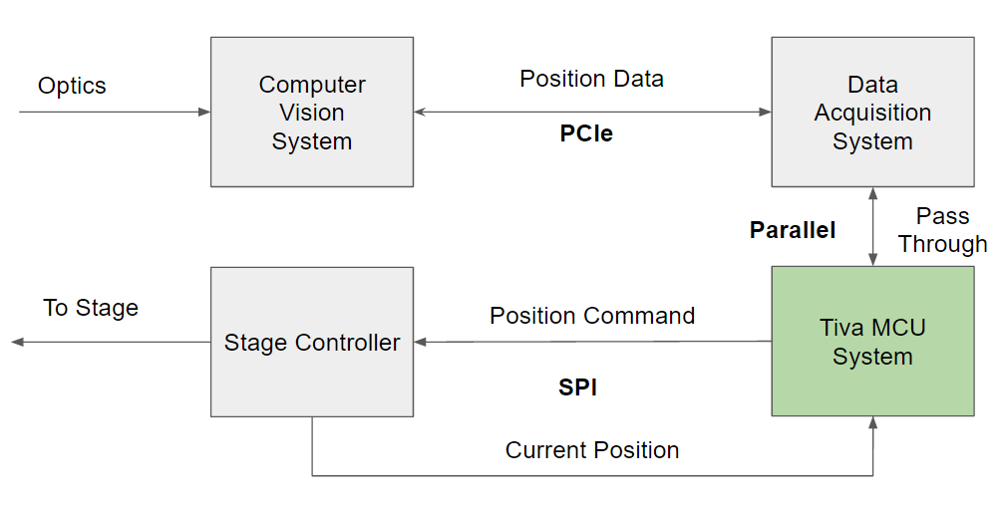
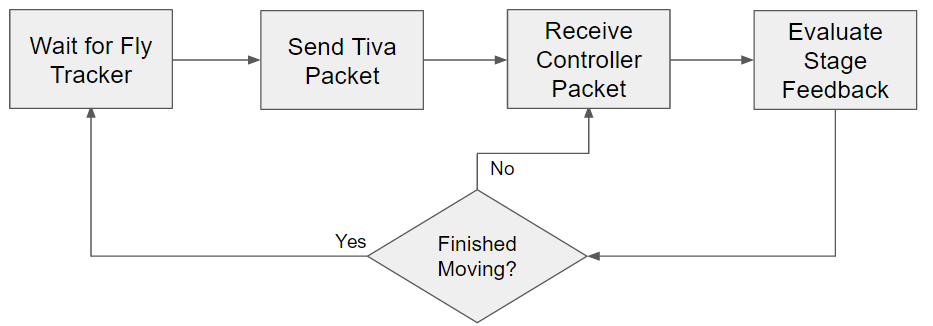
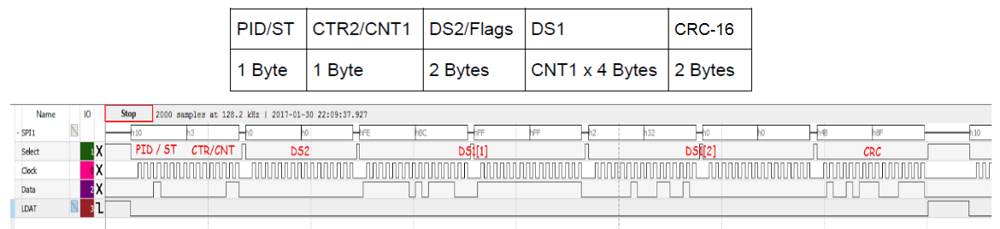

This project is an extension of the Flyception system developed by researchers at the Kavli Institute for Brain and Mind at University of California, San Diego. The Flyception system used a system of mirrors and cameras to track the motion of a free-moving fruit fly in order to observe neural activity using phosphorescence from genetically encoded calcium sensors. This allowed researchers to observe the neural activity of fruit flies during actions which traditional methods, which require immobilizing the flies, do not allow. The drawback to this system is that, because the camera sensor and lensing is far away from the fly, the resolution of the brain imaging is limited. The new system, named flyBAM, places the free-moving fly in an arena beneath a fixed objective lens of a microscope and moving the arena beneath the lens in order to keep the fly in frame. The researchers leading the project, Dhruv Grover and Takeo Katsuki, provided us with an OpenCV based system for detecting fly movement direction. Our team's role on the project was to develop a high speed SPI link from the computer running the image processing to the microscope's XY-stage controller (C-867 PILine® Motion Controller).
The SPI link needs to provide a method to transfer movement commands to the microscope stage at a rate faster than the fly's rate of movement. To avoid the overhead of the Windows USB scheduler and the C-867's USB command interpreter, a TI Tiva C Series ARM development board was selected to handle communication from a PCIe connected DAq to the stage controller. Although the C-867 does not have an officially supported SPI interface, the Physik Instrumente engineers claimed to have established a connection to the device over SPI and sent us the SPI documentation for the C-867. The component of the design that my team handled is marked in green on the system diagram below.  The implementation of the Tiva software is described in the system diagram below: 
The C-867 SPI interface requires a specific SPI implementation which, in addition to the typical CLK, MISO, MOSI, and CS lines,
also requires a LDAT line for data latching at the beginning and end of each packet. The structure of the data
packets is:

where bytes and bits are ordered MSB first.
| PID/ST | | | ID and STATUS bits |
| CTR2/CNT1 | | | DS2 control and number of DS1 words |
| DS2/Flags | | | Slow data transfer/On-Target Flags |
| DS1 | | | Axis target position |
| CRC-16 | | | Error detecting code |
The cyclic redundancy check (CRC) is an error-detecting code which passes the dataset through a linear-feedback shift register with a specified polynomial. The output of this procedure is attached to the original message and the code is compared to the message at the receiver side to ensure that all data was sent correctly. The C-867 uses a CRC-16 with a polynomial of 0x8005 and an initial value of 0xFFFF.
The Tiva MCU was programmed in C. The correct registers were written to enable SPI communication and SPI and packet forming functions were developed. While the Tiva had built-in CRC generation, its polynomial options were limited so CRC-16 functions were written to use the 0x8005 polynomial.
With the packet generation, sending, and receiving functions completed, we began attempts to send data to the C-867. The response packets from the controller indicated that the sending packet had a CRC error, however, the CRC generation was double checked and confirmed to be correct. The on-target flags and CRC from the response packets confirmed that we were correctly receiving the response and using the correct CRC-16 implementation. To further evaluate our implementation, we sent packets to a z-axis piezo controller(E-709) produced by Physik Instrumente which utilizes an identical SPI configuration without an LDAT line. The responses from the E-709 indicated that our SPI and CRC implementations were correct. After discovering some registers on the E-709 which were necessary to enable SPI control of the E-709 piezo, we achieved movement of the z-axis piezo. Unfortunately, the same registers were not present on the C-867.
Determine why the C-867 is refusing SPI commands.